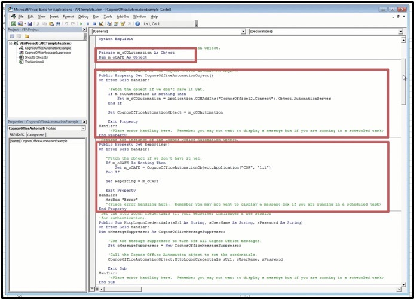

Introduction
Using an application programming interface (API), you can automate the refreshing or publishing of content.
You can use the API to create a scheduled batch program to refresh content on a daily, weekly, or monthly basis so that, as your period data changes, the affected files are kept up-to-date.
You can call the API within Microsoft Excel workbooks using VBA or using VBS and a command line interface. For these types of automation to work, you must register one or more macros within the workbook.
If you have IBM® Cognos® Office installed, you can also use the API in Microsoft Word and Microsoft PowerPoint.
When using sample macros and script files as part of your own processing functions, remember that the API is accessible only as user defined functions (UDFs). UDFs are functions created in Visual Basic for Applications (VBA). In this case, however, the UDFs are created within the IBM Cognos solution and are called from VBA.
To help you understand what is possible using this API, several samples are provided. You can use the samples to help you create your own solutions.
- Creating VBA macros
- Passing parameters, leveraging VBS and the command line interface
In addition to these capabilities, you can schedule scripts, either ones that you create or the samples, to run as a batch process at a set time.
To use automation, you must set your macro security to an appropriate level in your Microsoft application. You can set the macro security level using one of the following options depending on your version of Microsoft Office.
- Change the security level of your Microsoft application to medium or low.
- Change the trusted publishers setting of your Microsoft application so that installed add-ins or templates are trusted.
Report issues
Any issues or errors related to the Planning Analytics for Microsoft Excel API documentation can be reported in GitHub.
To report any issues or errors related to Planning Analytics for Microsoft Excel API features or functionality, use the IBM Planning Analytics Community.
Set up
The quickest way to set up automation is to import the CognosOfficeAutomationExample.bas file into the Microsoft application.
This file contains all the necessary macros, including the CognosOfficeAutomationObject macro. Alternatively, you can create templates that contain this .bas file to supply the code for logging on to IBM® Cognos® application, refreshing the content of specified workbooks, documents, or presentations, and logging off.
After the reference to IBM Cognos automation is established, any macro in VBA can call the functions exposed in the IBM Cognos automation API.
If the Microsoft application is open when a command is executing, the command executes in interactive mode. If the Microsoft application is closed when the command is executing, the command executes in batch mode. Executing in batch mode means that all display alerts are turned off.
Because the object is obtained at run time and there is no type library installed on the client machine, you cannot use IntelliSense to determine what properties and methods are available on the object.
Before you begin
To use the IBM Cognos automation macro files, you must import the CognosOfficeMessageSuppressor.cls file. The .cls file contains the SuppressMessages function that allows you to disable the standard alerts and messages.
Procedure
- Open a new Office document, workbook, or presentation.
- Customize the ribbon to display the Developer tab.
- Click the Developer tab, and then click Visual Basic.
- Do the following based on the Microsoft Office application you are using:
- For Microsoft Excel and Microsoft PowerPoint, right-click VBAProject and click Import File.
- For Microsoft Word, right-click Project and click Import File. The Import File dialog box appears.
- Browse to the location where the IBM Cognos Automation macro files are installed.
The default location is
<client_installation_directory>\Automation. - For Microsoft Excel or Microsoft Word click the
CognosOfficeAutomationExample.basfile or for Microsoft PowerPoint click the CognosOfficeAutomationPPExample.bas file and import it into the VBA project. Do not edit this code module. Do not import both files, which are application specific. This will cause problems for the Open routine. - Repeat steps 3 to 5 to import the
CognosOfficeMessageSuppressor.clsfile. - Close the Visual Basic Editor and return to the IBM Cognos application.
- Save the file as a template, close it, and then reopen the template file.
Results
You can now call the macros contained in the Cognos automation macro files from the VBA code that you write in Excel, Word, or PowerPoint.
Log automation activities and errors
Use the automation log to track automation activities and troubleshoot problems with automation tools and scripts. The automation log is automatically generated when you run an automation script.
The automation log is returned using a call to the Automation API function TraceLog. For information about the TraceLog function, see TraceLog.
Necessary IBM Cognos automation API references
m_o Cafe object reference
Dim m_oCAFE As Object
m_oCOAutomation object reference
Private m_oCOAutomation As Object
CognosOfficeAutomationObject() Property Get statement
'Returns the instance of the Cognos Office Automation Object.
Public Property Get CognosOfficeAutomationObject()
On Error GoTo Handler:
'Fetch the object if we don't have it yet.
If m_oCOAutomation Is Nothing Then
Set m_oCOAutomation = Application.COMAddIns("CognosOffice12.Connect").Object.AutomationServer
End If
Set CognosOfficeAutomationObject = m_oCOAutomation
Exit Property
Handler:
'<Place error handling here. Remember you may not want to display a message box if you are running in a scheduled task>
End Property
Copy
Reporting() Property Get statement
'Returns the instance of the Cognos Office Automation Object.
Public Property Get Reporting()
On Error GoTo Handler:
'Fetch the object if we don't have it yet.
If m_oCAFE Is Nothing Then
Set m_oCAFE = CognosOfficeAutomationObject.Application("COR", "1.1")
End If
Set Reporting = m_oCAFE
Exit Property
Handler:
MsgBox "Error"
'<Place error handling here. Remember you may not want to display a message box if you are running in a scheduled task>
End Property
The references mentioned in this section can be imported via the CognosOfficeAutomationExample.bas file. It is good practice to double-check that the file contains all of references. If the CognosOfficeAutomationExample.bas file is missing any references, you can add these references to the file yourself.

Common View Specification Schema
The following is the schema for the Common View Specification
/*!
* Licensed Materials - Property of IBM
* © IBM Corp. 2021. All Rights Reserved.
* US Government Users Restricted Rights - Use, duplication or
* disclosure restricted by GSA ADP Schedule Contract with IBM Corp.
*/
{
"$schema": "http://json-schema.org/draft-06/schema#",
"title": "IBM Planning Analytics Universal View Specification",
"type": "object",
"required": ["MDX"],
"additionalProperties": false,
"properties": {
"MDX": {
"type": "string"
},
"Meta": {
"type": "object",
"additionalProperties": true,
"properties": {
"Aliases": {
"type": "object",
"additionalProperties": false,
"patternProperties": {
"^\\[.+\\]\\.\\[.+\\]$": {
"type": "string"
}
}
},
"ExpandAboves": {
"type": "object",
"additionalProperties": false,
"patternProperties": {
"^\\[.+\\]\\.\\[.+\\]$": {
"type": "boolean"
}
}
},
"ContextSets": {
"type": "object",
"additionalProperties": false,
"patternProperties": {
"^\\[.+\\]\\.\\[.+\\]$": {
"type": "object",
"additionalProperties": false,
"properties": {
"Expression": {
"type": "string"
},
"SubsetName": {
"type": "string"
},
"IsPublic": {
"type": "boolean"
}
},
"oneOf": [
{
"required": ["Expression"]
},
{
"required": ["SubsetName"]
}
],
"dependencies": {
"IsPublic": "SubsetName"
}
}
}
}
}
}
}
}
You can use a Common View Specification to embed additional state information in your Exploration View or Quick Report.
A Common View Specification (CVS) is a JSON that can be used to embed additional state information when creating an Exploration View or Quick Report. A CVS is composed of two major parts; the MDX query and a sidecar for additional state information. Data driven mechanisms, such as TurboIntegrator are only concerned with the MDX query, however user interfaces will also consume the sidecar to ensure presentation consistency. By using a CVS, you can generate highly customizable Exploration Views or Quick Reports. For example, using a CVS, you can define aliases and subsets as per the CVS schema input.
To generate an Exploration View or Quick Report from a CVS, use the CreateFromCVS API method. For more information, see CreateFromCVS (Exploration) and CreateFromCVS (Quick Report).
Global API functions
Global API functions can be used to interact with any IBM Planning Analytics for Microsoft Excel worksheets. The global functions that are exposed through the IBM Cognos® automation objects are:
GetConnection
GetConnection is a method exposed by the top level reporting API object. If you want to use the REST APIs, you'll need to use the GetConnection method to return the connection object that implements the REST request methods (GET, POST, DELETE, PATCH) and communicate with the TM1 Server.
To learn more about REST request methods, see REST API.
Syntax
The following string is the syntax for the GetConnection method.
To use the method, you must know the URL of the host that you want to send REST requests to.
Reporting.GetConnection(<CURRENT>)
Arguments
| Argument | Description | Data type |
|---|---|---|
| CURRENT | The URL of the host that you want to send REST requests to. | String |
ChangeDataSource (Task Pane)
You can use the ChangeDataSource method to change datasources within a session. You might be prompted for a login if you weren't logged in.
Syntax
Reporting.TaskPane.ChangeDatasource "host system URL" "server name"
ClearAllData
Example
CognosOfficeAutomationObject.ClearAllData
ClearAllData clears all data values in the opened workbooks.
Syntax
The following string is the syntax for the ClearAllData method.
ClearAllData()
ClearBook
Example
Application.COMAddIns("CognosOffice12.Connect").Object.AutomationServer.Application("COR", "1.1").ClearBook
ClearBook clears Planning Analytics for Microsoft Excel data in the active book.
Syntax
The following string is the syntax for the ClearBook method.
ClearBook()
ClearCache
Example
CognosOfficeAutomationObject.ClearCache()
ClearCache reduces the size of an IBM® Planning Analytics for Microsoft Excel workbook by clearing metadata and data from formulas.
Syntax
The following string is the syntax for the ClearCache method.
ClearCache()
ClearSelection
Example
Application.COMAddIns("CognosOffice12.Connect").Object.AutomationServer.Application("COR", "1.1").ClearSelection
ClearSelection clears IBM Planning Analytics for Microsoft Excel data in the active selection.
Syntax
The following string is the syntax for the ClearSelection method.
ClearSelection()
ClearSheet
Example
Application.COMAddIns("CognosOffice12.Connect").Object.AutomationServer.Application("COR", "1.1").ClearSheet
ClearSheet clears IBM Planning Analytics for Microsoft Excel data in the active sheet.
Syntax
The following string is the syntax for the ClearSheet method.
ClearSheet()
Hide (Task Pane)
Example:
Dim bResult As Boolean
bResult = Reporting.TaskPane.IsVisible()
If bResult = True Then
Call Reporting.TaskPane.Hide()
End If
You can use the Hide method to hide the Task Pane.
Syntax
The following is the syntax for the Hide method.
Reporting.TaskPane.Hide()
HttpLogonCredentials
The HttpLogonCredentials function authenticates a user to a Web site that requires new authentication credentials, such as Basic, Kerberos, and SiteMinder. HttpLogonCredentials takes the URL, user name, and password that are used for authentication on the Web site.
Syntax
IBM® Cognos® does not support SiteMinder form-based authentication. You must use the IBM Cognos menu commands and options instead of the API to automate the refreshing and publishing of content.
HttpLogonCredentials (url, user name, password)
Arguments
| Argument | Description | Data type |
|---|---|---|
| url | The URL for the Web site against which you want to authenticate. | String |
| user name | The user name for authentication. | String |
| password | The password for authentication. | String |
IsVisible (Task Pane)
Example:
Dim bResult As Boolean
bResult = Reporting.TaskPane.IsVisible()
If bResult = True Then
Call Reporting.TaskPane.Refresh()
End If
You can use the IsVisible method to return the state of the Task Pane. If True is returned, the Task Pane is visible. If False is returned, the Task Pane is not visible.
Syntax
The following is the syntax for the IsVisible method.
Reporting.TaskPane.IsVisible()
Logoff
Example
CognosOfficeAutomationObject.Logoff
Logoff logs off all the IBM® Cognos® servers to which users are currently logged on.
Syntax
The following string is the syntax for the Logoff method.
Logoff()
Logon
Example of the syntax for logging into an IBM Cognos Analytics system:
Dim bResult As Boolean
bResult = CognosOfficeAutomationObject.Logon
("http://localhost/ibmcognos/cgi-bin/cognos.cgi",
"Administrator", "CognosAdmin", "Production")
Example of the syntax for logging into an IBM TM1 system:
Dim bResult As Boolean
bResult = CognosOfficeAutomationObject.Logon
("http://myPlanningAnalyticsServer.com",
"admin", "peaches", "localhost/Planning Sample")
The Logon function takes the URL of the server and the credential elements required by IBM® Planning Analytics for Microsoft Excel to perform a logon: user ID, password, and namespace. The namespace parameter is case-sensitive; therefore, you must match the namespace exactly. Planning Analytics for Microsoft Excel uses the Logon function, whether you're logging into an IBM Cognos Analytics system or an IBM TM1 system.
IBM Cognos® Office stores user credentials only in memory. For this reason, users are responsible for storing their credentials in a secured area and passing them to the logon methods at run time.
If you use the Logon function with incorrect credentials, the system raises a CAMException error, however, no exception is written to the log file indicating a failure. To avoid this situation, remember that strings are case-sensitive and ensure that you use valid user IDs, passwords, and namespaces.
Logon does not appear in the macro list in the Microsoft application because the macro receives an argument. Any macro with parameters is by definition private and private macros are not shown in the macro options by default.
Syntax
The following string is the syntax for the Logon method.
Boolean Logon (url, user name, password, namespace)
Arguments
| Argument | Description | Data type |
|---|---|---|
| url | The URL for the IBM Cognos Analytics or IBM TM1 system, which you want to log on to. | String |
| user name | The user name for authentication. | String |
| password | The password for authentication. | String |
| namespace | The specific namespace for authentication. | String |
Return value
Data type: Boolean
The Boolean value is true if successful
Publish
Example of the syntax for publishing to a IBM Cognos Analytics data source:
Publish("CAMID('::Anonymous')/folder[@name='My
Folders']","Description of 'My Folders'", "")
Example of the syntax for publishing to a IBM Planning Analytics data source:
("https://myPAconnection.PlanningAnalytics.com", "C:\path\to\local\file.xlsx", "/tm1/Planning%20Sample/api/v1/Contents('Applications')/Contents('Planning %20Sample')", "PublishedFileName.xlsx", "My Description", "MyToolTip")
Use Publish to publish content to IBM® Cognos® Connection or to a TM1 Server Application Folder.
Syntax
The arguments mirror the entry boxes in the dialog box that is used in the user interface.
Publish does not appear in the macro list in the Microsoft application because the macro receives an argument. Any macro with parameters is by definition private and private macros are not shown in the macro options by default.
Publish (url, document path, server path, name, description, screenTip)
Arguments
| Argument | Description | Data type |
|---|---|---|
| url | The server to which you are publishing. | String |
| document path | The location of the document to be published. It is the local path of the file that you want to publish. If the path of your folder is not correct when you publish using automation, you are again prompted to log on. This is because IBM Cognos does not distinguish between non-existing folders and folders for which the user does not have permissions. This security feature helps to prevent the discovery of the folder path by trial and error. |
In IBM Cognos Analytics, the folder path is a search path. For more information, see the IBM Cognos Analytics Administration Guide. | String server path | The path in the content store where the document is saved. | String name | The document name that will appear in IBM Cognos. | String description | The document description that will appear in IBM Cognos. | String screenTip | The text that users see when they point to the document in IBM Cognos. | String
PublishTm1
Example for publishing to a TM1 data source:
Public Sub PublishTm1()
Dim oMessageSuppressor As CognosOfficeMessageSuppressor
Set oMessageSuppressor = New CognosOfficeMessageSuppressor
Dim sUrl As String
sUrl = "http://myserver.ibm.com"
Dim sDS As String
sDS = "Planning Sample"
Dim sPublishPath As String
sPublishPath = "Contents('Planning Sample')/Contents('Top Down Goals')"
Dim sDocumentPath As String
sDocumentPath = "C:\Users\JC\Documents\Publish API book.xlsx"
Dim sName As String
sName = "Publish&Tm1 test1"
Dim sDescription As String
sDescription = "New PublishTm1 api"
Dim sScreenTip As String
sScreenTip = "test"
Dim sIsPrivate As Boolean
sIsPrivate = True
Dim sAsReference As Boolean
sAsReference = False
CognosOfficeAutomationObject.PublishTm1 sUrl, sDS, sPublishPath, sDocumentPath, sName, sDescription, sScreenTip, sIsPrivate, sAsReference
Exit Sub
End Sub
PublishTm1 is a TM1-specific API that differs from the existing Publish api in the following ways:
- No need to include /tm1/Planning%20Sample/api/v1/Contents('Applications')/ in the publish path; the API fills that in during execution.
- No need to encode spaces and other special characters.
- Takes a Boolean argument to control publish scope (public/private).
- Takes a Boolean argument to publish as reference.
Syntax
PublishTm1(string serverURL, string serverName, string publishPath, string documentPath, string name, string description, string screenTip, bool isPrivate, bool asReference)
MakeFolderTm1
Example for creating a public or private folder at a given location:
Public Sub MakeFolderTm1()
Dim oMessageSuppressor As CognosOfficeMessageSuppressor
Set oMessageSuppressor = New CognosOfficeMessageSuppressor
Dim sUrl As String
sUrl = "http://ablauts1.fyre.ibm.com"
Dim sDS As String
sDS = "Planning Sample"
Dim sFolderPath As String
sFolderPath = "Contents('Planning Sample')/Contents('Top Down Goals')"
Dim sFolderName As String
sFolderName = "PublishTm1_Folder1"
Dim sIsPrivate As Boolean
sIsPrivate = False
CognosOfficeAutomationObject.MakeFolderTm1 sUrl, sDS, sFolderPath, sFolderName, sIsPrivate
Exit Sub
End Sub
MakeFolderTm1 is a TM1-specific API that can create a public or private folder at a given location and differs from the existing Publish api in the following ways:
- No need to include /tm1/Planning%20Sample/api/v1/Contents('Applications')/ in the publish path; the API fills that in during execution.
- No need to encode spaces and other special characters.
- Takes a Boolean argument to control publish scope (public/private).
Syntax
MakeFolderTm1(string serverURL, string serverName, string folderPath, string folderName, bool isPrivate)
PublishTm1Multiple
Example for publishing multiple files to a TM1 data source:
Public Sub PublishTm1Multiple()
On Error GoTo HANDLER
Dim oMessageSuppressor As CognosOfficeMessageSuppressor
'Use the message suppressor to turn off all Cognos Office messages.
Set oMessageSuppressor = New CognosOfficeMessageSuppressor
Dim sUrl As String
sUrl = "http://ablauts1.fyre.ibm.com"
Dim sDS As String
sDS = "Planning Sample"
Dim sPublishPath As String
sPublishPath = "Contents('Planning Sample')/Contents('Top Down Goals')"
Dim sDocumentPaths() As String
sDocumentPaths = Split("C:\Users\JC\Documents\Publish API testbook.xlsx, C:\Users\JC\Documents\4420.xlsx", ",")
Dim sNames() As String
sNames = Split("Publish Multiple test 1,Publish Multiple test 2", ",")
Dim sDescriptions() As String
sDescriptions = Split("A test of the new PublishTm1 api", ",")
Dim sScreenTips As String
sScreenTips() = Split("A test", ",")
Dim sIsPrivate As Boolean
'To publish with a private scope set this to true
sIsPrivate = True
Dim sAsReference As Boolean
'To publish the file as a reference set this to true
sAsReference = False
'Call the Cognos Office Automation object to publish the file.
CognosOfficeAutomationObject.PublishTm1Multiple sUrl, sDS, sPublishPath, sDocumentPaths, sNames, sDescriptions, sScreenTips, sIsPrivate, sAsReference
Exit Sub
HANDLER:
End Sub
PublishTm1Multiple is a TM1-specific API that is an expansion on the PublishTm1 api, which allows a list of files to be published at once to the same location with the same scope. PublishTm1Multiple differs from the existing Publish api in the following ways:
- No need to include /tm1/Planning%20Sample/api/v1/Contents('Applications')/ in the publish path; the API fills that in during execution.
- No need to encode spaces and other special characters.
- Takes a string array of file locations and names (must be a 1-to-1 pairing of files and file names).
- Takes a string array of descriptions and screentips. If these aren’t provided API defaults to an empty string.
- Takes a Boolean argument to control publish scope (public/private).
- Takes a Boolean argument to publish as reference.
- Publish location, scope, and as reference settings are applied to all the files in the array.
Syntax
PublishTm1Multiple(string serverURL, string serverName, string publishPath, string[] documentPaths, string[] names, string[] descriptions, string[] screenTips, bool isPrivate, bool asReference)
Refresh (Task Pane)
Example:
Dim bResult As Boolean
bResult = Reporting.TaskPane.IsVisible()
If bResult = True Then
Call Reporting.TaskPane.Refresh()
End If
You can use the Refresh method to refresh the metadata tree in the Task Pane.
Syntax
The following is the syntax for the Refresh method.
Reporting.TaskPane.Refresh()
RefreshAllData
Example
Dim bResult as Boolean
Copy
bResult = CognosOfficeAutomationObject.Logon
("http://localhost/ibmcognos/cgi-bin/cognos.cgi",
"Administrator", "CognosAdmin", "Production")
Copy
'Refresh the data if we successfully logged on to the
IBM Cognos server.
Copy
If bResult Then
Copy
CognosOfficeAutomationObject.RefreshAllData
Copy
End If
RefreshAllData fetches the most current data values from the IBM® TM1 server and updates those values in the current document.
Syntax
The system must be successfully logged on to the IBM TM1 server.
If you are using IBM Cognos Office with IBM Cognos® Analytics data, ensure that the Prompt Update Method property on the Manage Data tab in the IBM Cognos pane is set to Use=Display or Do Not Update to complete the operation. Otherwise, the report cannot be refreshed without user intervention and generates errors.
RefreshAllData()
RefreshAllDataAndFormat
Example
Dim bResult as Boolean
Copy
bResult = CognosOfficeAutomationObject.Logon
("http://localhost/ibmcognos/cgi-bin/cognos.cgi",
"Administrator", "CognosAdmin", "Production")
Copy
'Refresh the data and formatting if we successfully logged on to the
IBM Cognos server.
Copy
If bResult Then
Copy
CognosOfficeAutomationObject.RefreshAllDataAndFormat
Copy
End If
RefreshAllDataAndFormat retrieves the most current data values and formatting from the IBM® Cognos® server and updates those values and formats in the current document.
Syntax
The system must be successfully logged on to the IBM Cognos server.
If you are using IBM Cognos Office with IBM Cognos Analytics data, ensure that the Prompt Update Method property on the Manage Data tab in the IBM Cognos pane is set to Use=Display or Do Not Update to complete the operation. Otherwise, the report cannot be refreshed without user intervention and generates errors.
RefreshAllDataAndFormat()
RefreshBook
Example
Application.COMAddIns("CognosOffice12.Connect").Object.AutomationServer.Application("COR", "1.1").RefreshBook
RefreshBook refreshes all data values in the opened workbooks.
Syntax
The following string is the syntax for the RefreshBook method.
RefreshBook()
RefreshSelection
Example
Application.COMAddIns("CognosOffice12.Connect").Object.AutomationServer.Application("COR", "1.1").RefreshSelection
RefreshSelection refreshes IBM Planning Analytics for Microsoft Excel data in the active selection.
Syntax
The following string is the syntax for the RefreshSelection method.
RefreshSelection()
RefreshSheet
Example
Application.COMAddIns("CognosOffice12.Connect").Object.AutomationServer.Application("COR", "1.1").RefreshSheet
RefreshSheet refreshes IBM Planning Analytics for Microsoft Excel data in the active sheet.
Syntax
The following string is the syntax for the RefreshSheet method.
RefreshSheet()
Settings
Example using
SetValue
Reporting.Settings.SetValue "GroupingOption", "Full"
Example using
GetValue
Reporting.Settings.GetValue ("ShowServerInExploration")
The Settings function can be used to enable, disable, or define settings in Planning Analytics for Microsoft Excel.
Syntax
SetValue is used to set a value in a setting.
Reporting.Settings.SetValue "<setting name>", "<setting value>"
GetValue is used to retrieve a value of a setting.
Reporting.Settings.GetValue("<setting name>")
Arguments
| Argument | Description | Data type |
|---|---|---|
| setting name | The name of the setting that you want to enable, disable, or define. | Alphabetic |
| setting value | The value that you want to use to enable, disable, or define in the setting. | Alphabetic, alphanumeric, boolean, integer |
View Settings in the CognosOfficeReportingSettings.xml file for a list of the possible settings and values that you can use.
Show (Task Pane)
Example:
Dim bResult As Boolean
bResult = Reporting.TaskPane.IsVisible()
If bResult = True Then
Call Reporting.TaskPane.Show()
End If
You can use the Show method to reveal the Task Pane.
Syntax
The following is the syntax for the Show method.
Reporting.TaskPane.Show()
SuppressMessages
Example
Private Sub Class_Initialize()
CognosOfficeAutomationObject.SuppressMessages True
End Sub
Private Sub Class_Terminate()
CognosOfficeAutomationObject.SuppressMessages False
End Sub
When added to an existing script or function in the Planning Analytics for Microsoft Excel API, SuppressMessages suppresses all of the messages and dialog boxes that may arise from the script or function.
In addition to SuppressMessage, you need to set the Application.DisplayAlerts property in Microsoft Excel to false. For more information about the Application.DisplayAlerts property, see Application.DisplayAlerts property.
Syntax
The following string is the syntax for the SuppressMessages method.
SuppressMessages()
TraceError
Example
Application.COMAddIns("CognosOffice12.Connect").Object.AutomationServer.TraceError("VBA method failed")
The following is an example of the appended error information in the IBM Planning Analytics for Microsoft Excel log file:
[Severity=Error]
[Exception] TraceError(String error)
[Thread=6, Background=True, Pool=True, Domain=]
[System.Exception] VBA API ERROR: VBA method failed
TraceError appends error information into the IBM Planning Analytics for Microsoft Excel log file. The user defines the error information they wish to append to the log file for errors.
Syntax
The following string is the syntax for the TraceError method.
TraceError("<user defined error information>")
TraceLog
Example
Dim strTraceLog as String
strTraceLog = CognosOfficeAutomationObject.TraceLog
MsgBox strTraceLog
TraceLog returns all the automation activities and errors.
Syntax
The following string is the syntax for the TraceLog method.
*String* TraceLog ()
Return Value
Data type: String
The value of the logging item as string
UnlinkAllData
Example
CognosOfficeAutomationObject.UnlinkAllData
UnlinkAllData disconnects all the IBM® Cognos® data values in the current document. The values are no longer updated with subsequent calls to RefreshAllData. The values become static.
Syntax
For IBM Cognos Office, any IBM Cognos data values that are imported into the current document after UnlinkAllData is called will continue to be linked to the IBM Cognos data source.
The values can be updated with new server data using the RefreshAllData call.
UnlinkAllData ()
UnlinkBook
Example
Application.COMAddIns("CognosOffice12.Connect").Object.AutomationServer.Application("COR", "1.1").UnlinkBook
UnlinkBook unlinks the active book from the connection.
Syntax
The following string is the syntax for the UnlinkBook method.
UnlinkBook()
UnlinkSelection
Example
Application.COMAddIns("CognosOffice12.Connect").Object.AutomationServer.Application("COR", "1.1").UnlinkSelection
UnlinkSelection disconnects the selected data values. The values are no longer updated with subsequent calls to Refreshable. The values become static.
Syntax
The following string is the syntax for the UnlinkSelection method.
UnlinkSelection()
UnlinkSheet
Example
Application.COMAddIns("CognosOffice12.Connect").Object.AutomationServer.Application("COR", "1.1").UnlinkSheet
UnlinkSheet unlinks the active sheet from the connection.
Syntax
The following string is the syntax for the UnlinkSheet method.
UnlinkSheet()
UpdateServerUrl
Example
UpdateServerUrl "http://testserver1/cgi-bin/cognos.cgi"
"http://prodserver1/cgi-bin/cognos.cgi"
The following example uses only the part of the URL that is changing:
UpdateServerUrl "testserver1" "prodserver1"
Use UpdateServerUrl to update the IBM® Cognos® server information for existing reports and formulas.
Syntax
The UpdateServerUrl method takes two arguments: the old server URL and the new server URL. These arguments mirror the entry boxes in the Update System dialog box. To gain access to this control from IBM Cognos, click the Options button on the IBM Cognos ribbon, then click Update System Utility.
The UpdateServerUrl method replaces the server information for existing reports. When running this command, the name of the package or data source remains the same. You can use this method to change only one server, such as a test server to a production server. The URL arguments can be full or partial URLs. If any argument is empty, this command does nothing, however, running this command with empty arguments has the potential to corrupt the report. Server information is stored in both the server property and the serialized report property. Running an empty command could cause these two instances to get out of sync.
Because the UpdateServerUrl method searches and replaces strings, it is possible to use only part of the URL, provided it is a unique substring.
UpdateServerUrl "old server URL string" "new server URL string"
Arguments
| Argument | Description | Data type |
|---|---|---|
| old server URL string | Indicates the URL of the source or current system. | String |
| new server URL string | Indicates the URL of the target system. | String |
UserAgent
Example
Dim useragent as String
useragent = Reporting.UserAgent
Returns the product and build version details. For example, PAfE/2.0.66.9 (8590999552); Excel/16.0.13127.
Syntax
The following string is the syntax for the UserAgent method.
Reporting.UserAgent
UserAgentSCRelease
Example
Dim release as String
release = Reporting.UserAgentSCRelease
Returns the condensed product version details. For example, 66.9.
Syntax
The following string is the syntax for the UserAgentSCRelease method.
Reporting.UserAgentSCRelease
UserAgentSCReleaseFull
Example
Dim releasefull as String
releasefull = Reporting.UserAgentSCReleaseFull
Returns the full product version details. For example, 2.0.66.9.
Syntax
The following string is the syntax for the UserAgentSCReleaseFull method.
Reporting.UserAgentSCReleaseFull
Wait
Example
Application.COMAddIns("CognosOffice12.Connect").Object.AutomationServer.Application("COR", "1.1").Wait
Usage example
Sub Wait()
Reporting.GetCurrentReport(ActiveCell).Commit
Reporting.Wait
Reporting.GetCurrentReport(ActiveCell).Refresh
End Sub
Sub Wait()
Application.COMAddIns("CognosOffice12.Connect").Object.AutomationServer.Application("COR", "1.1").RefreshBook
Application.COMAddIns("CognosOffice12.Connect").Object.AutomationServer.Application("COR", "1.1").Wait
MsgBox "Refresh complete!"
End Sub
Wait holds the VBA thread until all prior IBM Planning Analytics for Microsoft Excel background tasks are complete.
Syntax
The following string is the syntax for the Wait method.
Wait()
Exploration API functions
Exploration functions can be used to interact with exploration worksheets.
Exploration functions can use the following PropertyAccessor objects:
| PropertyAccessor | Description |
|---|---|
| Count | Counts the number of Explorations in active book. |
| GetAt(sheet) | Gets the Exploration object on the specified sheet name, from the active book, if it exists. |
| GetReports() | Gets the collection of Exploration objects from the active book. |
The Exploration functions that are exposed through the IBM® Cognos® automation objects are:
Clear (Exploration)
Example
Public Sub Clear()
Reporting.Explorations.GetAt(Application.ActiveSheet.Name).Clear
End Sub
Clear is used to clear all of the data values in the exploration.
Syntax
The following string is the syntax for the Clear method.
Reporting.Explorations.GetAt().Clear
Create (Exploration)
Example
Public Sub Create()
Reporting.Explorations.create "http://computername", "Planning Sample",
"plan_BudgetPlan", "Goal Input"
End Sub
Create generates an Exploration View based on the host system URL, server name, cube name, and view name.
Syntax
The following string is the syntax for the Create method.
Explorations.Create "<host system URL>", "<server name>", "<cube name>", "<view name>"
Arguments
| Argument | Description | Data type |
|---|---|---|
| host system URL | URL of the host system which the Exploration View is to be created from. | Alphanumeric string |
| server name | Name of the server which the Exploration View is to be created from. | Alphanumeric string |
| cube name | Name of the cube which the Exploration View is to be created from. | Alphanumeric string |
| view name | Name of the view which the Exploration View is to be created from. | Alphanumeric string |
CreateFromCVS (Exploration)
Example of the syntax for updating the common view specification of a report:
Reporting.Explorations.CreateFromCVS("http://server-example.ibm.com", "Planning Sample",
{
"MDX": "SELECT {([d1].[h1].[line 2],[d3].[h1].[2004]),([d1].[h1].[line 2],[d3].[h1].[Q1-2004]),([d1].[h1].[line 2],[d3].[h1].[Jan-2004])} DIMENSION PROPERTIES MEMBER_UNIQUE_NAME, LEVEL_NUMBER, CHILDREN_CARDINALITY ON 0 FROM [my_Cube] WHERE ( [d2].[h1].[toys], [d4].[h1].[USD], [d5].[h1].[Sales] ) CELL PROPERTIES CELL_ORDINAL, VALUE, FORMATTED_VALUE, FORMAT_STRING, UPDATEABLE, TM1UPDATEABLE, ANNOTATED, CONSOLIDATED",
"Meta": {
"Aliases": {
"[d1].[h1]": "english",
"[d3].[h1]": "english",
"[d2].[h1]": "SKU"
},
"ExpandAboves": {
"[d1].[h1]": false,
"[d1].[h2]": true,
"[d2].[h1]": false
},
"ContextSets": {
"[d2].[h1]": {
"Expression": "{ HIERARCHIZE( { TM1SUBSETALL([d2]) } ) }"
},
"[d4].[h1]": {
"SubsetName": "Default"
},
"[d5].[h1]": {
"SubsetName": "All Deparments",
"IsPublic": true
}
}
}})
You can use the CreateFromCVS method with a Common View Specification to create an Exploration View with embedded additional state information.
A Common View Specification (CVS) is a JSON that can be used to embed additional state information when creating an Exploration View. A CVS is composed of two major parts; the MDX query and a sidecar for additional state information. Data driven mechanisms, such as TurboIntegrator are only concerned with the MDX query, however user interfaces will also consume the sidecar to ensure presentation consistency. By using a CVS, you can generate highly customizable Exploration Views. For example, using a CVS, you can define aliases and subsets as per the CVS schema input.
Syntax
The following is the syntax for the CreateFromCVS method.
Reporting.Explorations.CreateFromCVS(“<host system URL>”, “<server name>”, “<Common view specification>”, <boolean>)
Arguments
| Argument | Description | Data type |
|---|---|---|
| Host system URL | The host system URL where you want to generate a new report. | String |
| Server name | The name of the server where you want to generate a new report. | String |
| Common View Specification | The common view specification that you want to use to generate the new report. | String |
| Boolean | Set to true if you want the report to be generated on a new sheet at the default location. Set to false if you want the report to be generated in the current sheet at the default location. The false setting will also delete existing reports on the sheet. |
True/False boolean |
For more information about the Common View Specification schema, see Commong View Specification schema.
CreateFromMDX (Exploration)
Example
Public Sub CreateFromMDX()
Reporting.Explorations.CreateFromMDX "http://vottepps06.canlab.ibm.com:9510/",
"Planning Sample", "SELECT {[plan_chart_of_accounts].[plan_chart_of_accounts].
[Revenue]} ON 0, {[plan_time].[plan_time].[2004]} ON 1 FROM [plan_BudgetPlan]"
End Sub
CreateFromMDX generates an Exploration View based on the host system URL, server name, and MDX string.
You may see an error if your MDX contains invalid members. Use the MDX Cleanup utility to automatically resolve invalid members. The MDX Cleanup utility resolves invalid members or removes them from the MDX if the members no longer exist.
The MDX Cleanup utility can be turned on by adding the following feature flag to your tm1features.json file.
{ "r50_EnableMDXCleanupUtility" : true }
For more information about the tm1features.json file, see Manually enabling features in the tm1features.json file
Syntax
The following string is the syntax for the CreateFromMDX method.
Reporting.Explorations.CreateFromMDX “<host system URL>”, “<server name>”, “<MDX>”
Arguments
| Argument | Description | Data type |
|---|---|---|
| host system URL | URL of the host system which the Exploration View is to be created from. | Alphanumeric string |
| server name | Name of the server which the Exploration View is to be created from. | Alphanumeric string |
| MDX | MDX statement which the Exploration View is to be created from. | Alphanumeric string |
GetColumnSuppression
Example
Public Sub AreColumnsSuppressed()
MsgBox Reporting.Explorations.GetAt(Application.ActiveSheet.Name).
GetColumnSuppression
End Sub
GetColumnSuppression is used to return whether or not zero-suppression is applied to columns in the exploration.
Syntax
The following string is the syntax for the GetColumnSuppression method.
Reporting.Explorations.GetAt().GetColumnSuppression
GetRowSuppression
Example
Public Sub AreRowsSuppressed()
MsgBox Reporting.Explorations.GetAt(Application.ActiveSheet.Name).
GetRowSuppression
End Sub
GetRowSuppression is used to return whether or not zero-suppression is applied to rows in the exploration.
Syntax
The following string is the syntax for the GetRowSuppression method.
Reporting.Explorations.GetAt().GetRowSuppression
GetSpecification
Example
Public Sub GetSpecification()
Msgbox
Reporting.Explorations.GetAt(Application.ActiveSheet.Name).GetSpecification
End Sub
GetSpecification is used to return the MDX string that is used to build the current Exploration.
Syntax
The following string is the syntax for the GetSpecification method.
Reporting.Explorations.GetAt().GetSpecification
GetValue
Example
Public Sub ToggleSetEditorPreview()
Dim x
x = Reporting.Settings.GetValue("SetEditorPreviewOn")
If "True" = x Then
Reporting.Settings.SetValue "SetEditorPreviewOn", "False"
Else
Reporting.Settings.SetValue "SetEditorPreviewOn", "True"
End If
End Sub
GetValue is used to retrieve the value of a particular setting in a session.
Syntax
The following string is the syntax for the GetValue method.
Reporting.Settings.GetValue("<Setting>")
Arguments
| Argument | Description | Data type |
|---|---|---|
| Setting | The name of the setting whose value you want to retrieve. | String |
Refresh (Exploration)
Example
Public Sub Refresh()
Reporting.Explorations.GetAt(Application.ActiveSheet.Name).Refresh
End Sub
Refresh is used to refresh the exploration.
Syntax
The following string is the syntax for the Refresh method.
Reporting.Explorations.GetAt().Refresh
SwapRowsAndColumns
Example
Public Sub SwapsRowsAndColumns()
Reporting.Explorations.GetAt(Application.ActiveSheet.Name).SwapsRowsAndColumns
End Sub
SwapRowsAndColumns is used to swap the rows and columns in an exploration.
Syntax
The following string is the syntax for the SwapRowsAndColumns method.
Reporting.Explorations.GetAt().SwapRowsAndColumns
SetRowSuppression
Example
Public Sub SetRowSuppressions()
Reporting.Explorations.GetAt(Application.ActiveSheet.Name).SetRowSuppression
True
End Sub
SetRowSuppression is used to enable and disable zero-suppression for rows in an exploration.
Syntax
The following string is the syntax for the SetRowSuppression method.
Reporting.Explorations.GetAt().SetRowSuppression <True/False value>
Arguments
| Argument | Description | Data type |
|---|---|---|
| True | Enables zero-suppression. | Boolean |
| False | Disables zero-suppression. | Boolean |
SetColumnSuppression
Example
Public Sub SetColumnSuppressions()
Reporting.Explorations.GetAt(Application.ActiveSheet.Name).SetColumnSuppression
True
End Sub
SetColumnSuppression is used to enable and disable zero-suppression for columns in an exploration.
Syntax
The following string is the syntax for the SetColumnSuppression method.
Reporting.Explorations.GetAt().SetColumnSuppression <True/False value>
Arguments
| Argument | Description | Data type |
|---|---|---|
| True | Enables zero-suppression. | Boolean |
| False | Disables zero-suppression. | Boolean |
SetSpecification
Example
Public Sub SetSpecifications()
Reporting.Explorations.GetAt(Application.ActiveSheet.Name).SetSpecification
"SELECT TM1SubsetToSet([plan_time], ""current_year_and_qtrs"") DIMENSION
PROPERTIES MEMBER_UNIQUE_NAME, MEMBER_NAME, MEMBER_CAPTION, LEVEL_NUMBER,
CHILDREN_CARDINALITY, [plan_time].[Time] ON 0, TM1TOGGLEDRILLSTATE
(TM1SubsetToSet([plan_chart_of_accounts], ""Default"") ,
{[plan_chart_of_accounts].[Revenue],[plan_chart_of_accounts].
[Operating Expense]} , EXPAND_BELOW , RECURSIVE) DIMENSION PROPERTIES
MEMBER_UNIQUE_NAME, MEMBER_NAME, MEMBER_CAPTION, LEVEL_NUMBER,
CHILDREN_CARDINALITY, [plan_chart_of_accounts].[AccountName] ON 1 FROM
[plan_BudgetPlan] WHERE ([plan_version].[FY 2004 Budget] ,
[plan_business_unit].[10000] , [plan_department].[1000] ,
[plan_exchange_rates].[actual] , [plan_source].[goal]) DIMENSION PROPERTIES
MEMBER_UNIQUE_NAME, MEMBER_NAME, MEMBER_CAPTION, LEVEL_NUMBER,
CHILDREN_CARDINALITY , [plan_version].[VersionName] , [plan_business_unit].
[BusinessUnit] , [plan_department].[Department] , [plan_source].[Source]"
End Sub
SetSpecification is used to define the subset and dimension properties of an existing exploration.
Syntax
The following string is the syntax for the SetSpecification method.
Reporting.Explorations.GetAt().SetSpecification “<MDX>”
Arguments
| Argument | Description | Data type |
|---|---|---|
| MDX | MDX statement used to define the subset and dimension properties of the exploration. | String |
SetValue
Example
Public Sub ToggleSetEditorPreview()
Dim x
x = Reporting.Settings.GetValue("SetEditorPreviewOn")
If "True" = x Then
Reporting.Settings.SetValue "SetEditorPreviewOn", "False"
Else
Reporting.Settings.SetValue "SetEditorPreviewOn", "True"
End If
End Sub
SetValue is used to set a new value for a specific setting and save the changes to the settings file.
Syntax
The following string is the syntax for the SetValue method.
Reporting.Settings.SetValue "<Setting>", "<Value>"
Arguments
| Argument | Description | Data type |
|---|---|---|
| Setting | The name of the setting whose value you want to set. | String |
| Value | The boolean value you want to set for the specified setting. | True/False boolean |
Unlink
Example
Public Sub Unlink()
Reporting.Explorations.GetAt(Application.ActiveSheet.Name).Unlink
End Sub
Unlink is used to convert an exploration to a static worksheet.
Syntax
The following string is the syntax for the Unlink method.
Reporting.Explorations.GetAt().Unlink
Quick Report API functions
Quick Report functions can be used to interact with Quick Report worksheets.
Quick Report functions can use the following PropertyAccessor objects:
| PropertyAccessor | Description |
|---|---|
| Count | Counts the number of Quick Reports in the active book. |
| GetReports() | Gets the collection of Quick Report objects from the active book. |
The Quick Report functions that are exposed through the IBM® Cognos® automation objects are:
Clear (Quick Report)
Example
Public Sub Clear()
Reporting.GetCurrentReport(<ActiveCell>).Clear
End Sub
Clear is used to clear data from the Quick Report.
Syntax
The following string is the syntax for the Clear method.
Reporting.GetCurrentReport(<ActiveCell>).Clear
ColumnHierarchies
Example
Sub ColumnHierarchies()
Dim columns As String
For Each Column In cafe.QuickReports.Get("0").ColumnDimensions
If columns <> "" Then
columns = columns & ", " & vbNewLine
End If
columns = columns & Column
MsgBox "Columns:" columns
End Sub
ColumnHierarchies is used to return the hierarchies that exist in the columns of a Quick Report report.
Syntax
The following string is the syntax for the ColumnHierarchies method.
cafe.QuickReports.Get("<Quick Report ID").ColumnDimensions
Arguments
| Argument | Description | Data type |
|---|---|---|
| Quick Report ID | The ID of the Quick Report that the column hierarchies are being returned from | Integer |
Commit
Example
Public Sub Commit()
Reporting.GetCurrentReport(<ActiveCell>).Commit True
End Sub
Commit is used to commit the Quick Report report.
Syntax
The following string is the syntax for the Commit method.
Reporting.GetCurrentReport(<ActiveCell>).Commit <True>
Create (Quick Report)
Example
Public Sub Create()
Reporting.QuickReports.Create "http://computername/", "Planning Sample",
"plan_BudgetPlan", "Goal Input"
End Sub
Create generates a Quick Report based on the host system URL, server name, cube name, and view name.
Syntax
The following string is the syntax for the Create method.
Reporting.QuickReports.Create "<host system URL>", "<server name>", "<cube name>", "<view name>"
Arguments
| Argument | Description | Data type |
|---|---|---|
| host system URL | URL of the host system which the Quick Report is to be created from. | Alphanumeric string |
| server name | Name of the server which the Quick Report is to be created from. | Alphanumeric string |
| cube name | Name of the cube which the Quick Report is to be created from. | Alphanumeric string |
| view name | Name of the view which the Quick Report is to be created from. | Alphanumeric string |
CreateFromCVS (Quick Report)
Example of the syntax for updating the common view specification of a report:
Reporting.QuickReports.CreateFromCVS("http://server-example.ibm.com", "Planning Sample",
{
"MDX": "SELECT {([d1].[h1].[line 2],[d3].[h1].[2004]),([d1].[h1].[line 2],[d3].[h1].[Q1-2004]),([d1].[h1].[line 2],[d3].[h1].[Jan-2004])} DIMENSION PROPERTIES MEMBER_UNIQUE_NAME, LEVEL_NUMBER, CHILDREN_CARDINALITY ON 0 FROM [my_Cube] WHERE ( [d2].[h1].[toys], [d4].[h1].[USD], [d5].[h1].[Sales] ) CELL PROPERTIES CELL_ORDINAL, VALUE, FORMATTED_VALUE, FORMAT_STRING, UPDATEABLE, TM1UPDATEABLE, ANNOTATED, CONSOLIDATED",
"Meta": {
"Aliases": {
"[d1].[h1]": "english",
"[d3].[h1]": "english",
"[d2].[h1]": "SKU"
},
"ExpandAboves": {
"[d1].[h1]": false,
"[d1].[h2]": true,
"[d2].[h1]": false
},
"ContextSets": {
"[d2].[h1]": {
"Expression": "{ HIERARCHIZE( { TM1SUBSETALL([d2]) } ) }"
},
"[d4].[h1]": {
"SubsetName": "Default"
},
"[d5].[h1]": {
"SubsetName": "All Deparments",
"IsPublic": true
}
}
}})
You can use the CreateFromCVS method with a Common View Specification to create a Quick Report with embedded additional state information.
A Common View Specification (CVS) is a JSON that can be used to embed additional state information when creating a Quick Report. A CVS is composed of two major parts; the MDX query and a sidecar for additional state information. Data driven mechanisms, such as TurboIntegrator are only concerned with the MDX query, however user interfaces will also consume the sidecar to ensure presentation consistency. By using a CVS, you can generate highly customizable Quick Reports. For example, using a CVS, you can define aliases and subsets as per the CVS schema input.
Syntax
The following is the syntax for the CreateFromCVS method.
Reporting.QuickReports.CreateFromCVS(“<host system URL>”, “<server name>”, “<Common view specification>”, <boolean>)
Arguments
| Argument | Description | Data type |
|---|---|---|
| Host system URL | The host system URL where you want to generate a new report. | String |
| Server name | The name of the server where you want to generate a new report. | String |
| Common View Specification | The common view specification that you want to use to generate the new report. | String |
| Boolean | Set to true if you want the report to be generated on a new sheet, in cell A1. Set to false if you want the report to be generated in the current sheet, starting on the current cell. | True/False boolean |
For more information about the Common View Specification schema, see Commong View Specification schema.
CreateFromMDX (Quick Report)
Example
Public Sub CreateFromMDX()
Reporting.QuickReports.CreateFromMDX "http://vottepps06.canlab.ibm.com:9510/",
"Planning Sample", "SELECT {[plan_chart_of_accounts].[plan_chart_of_accounts].
[Revenue]} ON 0, {[plan_time].[plan_time].[2004]} ON 1 FROM [plan_BudgetPlan]"
End Sub
CreateFromMDX generates a Quick Report based on the host system URL, server name, and MDX string.
Syntax
The following string is the syntax for the CreateFromMDX method.
Reporting.QuickReports.CreateFromMDX “<host system URL>”, “<server name>”, “<MDX>”
Arguments
| Argument | Description | Data type |
|---|---|---|
| host system URL | URL of the host system which the Quick Report is to be created from. | Alphanumeric string |
| server name | Name of the server which the Quick Report is to be created from. | Alphanumeric string |
| MDX | MDX statement which the Quick Report is to be created from. | Alphanumeric string |
Cube
Example
Public Sub Cube()
MsgBox Reporting.GetCurrentReport(<ActiveCell>).Cube
End Sub
If the Quick Report is located in the plan_BudgetPlan cube, in the Planning Sample server, the Cube function would return:
“{“server”:Planning Sample, “cube”:plan_BudgetPlan}”
Cube returns the search path of the Quick Report.
Syntax
The following string is the syntax for the Cube method.
Reporting.GetCurrentReport(<ActiveCell>).Cube
DataSource
Example
Public Sub DataSource()
MsgBox Reporting.GetCurrentReport(<ActiveCell>).DataSource
End Sub
DataSource is used to return the Quick Report host URL.
Syntax
The following string is the syntax for the DataSource method.
Reporting.GetCurrentReport(<ActiveCell>).DataSource
EnableIndents
Example
Public Sub EnableIndents()
Reporting.GetCurrentReport(<ActiveCell>).EnableIndents True
End Sub
EnableIndents is used to enable level based indents in your Quick Report reports.
Syntax
The following string is the syntax for the EnableIndents method.
Reporting.GetCurrentReport(<ActiveCell>).EnableIndents <True/False value>
Arguments
| Argument | Description | Data type |
|---|---|---|
| True | Enables indents in Quick Reports. | Boolean |
| False | Disables indents in Quick Reports. | Boolean |
ExecuteQuery
The following syntax is an example of the ExecuteQuery method stored in a VBA module:
Public Property Get GetRowsAxis(query As String) As Collection
Set c = Reporting.ExecuteQuery("http://pa.exampletm1.ibmcloud.com", "SData", <MDX query>)
Dim result As New Collection
For i = 0 To (c.GetAxes().Item(1).GetProperties().Item("tuples").GetMembers().Count - 1)
result.Add (c.GetAxes().Item(1).GetProperties().Item("tuples").GetMembers().Item(i).GetMembers().Item(3).GetValue())
Next i
Set GetRowsAxis = result
End Property
The following syntax is an example of the ExecuteQuery method being called in a worksheet:
Private Sub Worksheet_Change()
Dim c As Collection
Set c = RefreshAPIExample.GetRowsAxis(Cells(20, 4).Value2)
End Sub
ExecuteQuery is triggered from a worksheet change event on cell D20. If an MDX query string exists in cell D20, and is modified, the selected MDX will be executed through the ExecuteQuery call and will return a CellSet object. This CellSet object can then be traversed in a similar way to a JSON object.
ExecuteQuery is a method used to execute selected MDX statements in your Quick Report reports.
Syntax
The following string is the syntax for the ExecuteQuery method.
Reporting.ExecuteQuery("<data source URL>", "<server name>", <MDX query>)
Arguments
| Argument | Description | Data type |
|---|---|---|
| data source URL | The data source URL used in the Quick Report. | String |
| server name | The server name used in the Quick Report. | String |
| MDX query | The MDX query string to be executed by the method. | String |
GetTuple
Example
Sub PrintTuple()
Set tupleObject = cafe.QuickReports.Get("0").GetTuple(ActiveCell)
Dim tuple As String
For tupleIdx = 0 To tupleObject.Count - 1
If tuple <> "" Then
tuple = tuple & ", " & vbNewLine
End If
tuple = tuple & tupleObject.Item(tupleIdx)
Next
MsgBox "Tuple: " & vbNewLine & tuple
End Sub
GetTuple is used to return the tuple of a Quick Report at a given range. This function will return the tuple at the ActiveCell if no range is specified.
Syntax
The following string is the syntax for the GetTuple method.
cafe.QuickReports.Get("<Quick Report ID>").GetTuple(ActiveCell)
Arguments
| Argument | Description | Data type |
|---|---|---|
| Quick Report ID | The ID of the Quick Report that the tuple is being returned from. | Integer |
GetSpecification
Example
Public Sub GetSpecification()
MsgBox Reporting.GetCurrentReport(<ActiveCell>).GetSpecification
End Sub
GetSpecification is used to return the MDX string that is used to build the current Quick Report.
Syntax
The following string is the syntax for the GetSpecification method.
Reporting.GetCurrentReport(<ActiveCell>).GetSpecification
GetReport
Example
Public Sub GetReport()
Reporting.QuickReports.Get ("5")
End Sub
GetReport is used to return a specific Quick Report based on the Quick Report ID.
Syntax
The following string is the syntax for the GetReport method.
Reporting.QuickReports.Get ("<report ID>")
Arguments
| Argument | Description | Data type |
|---|---|---|
| report ID | ID of the Quick Report which the function is to return. | Integer |
ID
Example
Public Sub ID()
MsgBox Reporting.GetCurrentReport(<ActiveCell>).ID
End Sub
ID is used to return the Quick Report ID.
Syntax
The following string is the syntax for the ID method.
Reporting.GetCurrentReport(<ActiveCell>).ID
Name
Example
Public Sub Name()
MsgBox Reporting.GetCurrentReport(<ActiveCell>).Name
End Sub
Name is used to return the cube name and view name which the Quick Report is created from.
Syntax
The following string is the syntax for the Name method.
Reporting.GetCurrentReport(<ActiveCell>).Name
Rebuild
Example
Public Sub Rebuild()
Reporting.GetCurrentReport(<ActiveCell>).Rebuild
End Sub
Rebuild is used to rebuild a Quick Report.
Syntax
The following string is the syntax for the Rebuild method.
Reporting.GetCurrentReport(<ActiveCell>).Rebuild
RebuildSpecification
Example
Public Sub RebuildSpecification()
MsgBox Reporting.GetCurrentReport(<ActiveCell>).RebuildSpecification
End Sub
RebuildSpecification is used to return the MDX string that is used when rebuilding the Quick Report.
Syntax
The following string is the syntax for the RebuildSpecification method.
Reporting.GetCurrentReport(<ActiveCell>).RebuildSpecification
Refresh (Quick Report)
Example
Public Sub Refresh()
Reporting.GetCurrentReport(<ActiveCell>).Refresh
End Sub
Refresh is used to refresh a Quick Report.
Syntax
The following string is the syntax for the Refresh method.
Reporting.GetCurrentReport(<ActiveCell>).Refresh
Replace
Example
Public Sub Replace()
Reporting.QuickReports.Replace Reporting.GetCurrentReport(ActiveCell).4,
"SELECT {[plan_chart_of_accounts].[plan_chart_of_accounts].[Revenue]} ON 0,
{[plan_time].[plan_time].[2004]} ON 1 FROM [plan_BudgetPlan]"
End Sub
Replace is used to replace the MDX statement in the Quick Report with another MDX statement.
Syntax
The following string is the syntax for the Replace method.
Reporting.QuickReports.Replace Reporting.GetCurrentReport(ActiveCell).<Quick Report ID>, <MDX statement>
Arguments
| Argument | Description | Data type |
|---|---|---|
| Quick Report ID | The ID of the Quick Report that will have its MDX statement replaced. | Integer |
| MDX statement | The MDX statement that will be replacing the current MDX statement in the Quick Report. | String |
ReplaceWithFormats
Example
Public Sub ReplaceWithFormats()
Reporting.QuickReports.ReplaceWithFormats Reporting.GetCurrentReport(ActiveCell).4,
"SELECT {[plan_chart_of_accounts].[plan_chart_of_accounts].[Revenue]} ON 0,
{[plan_time].[plan_time].[2004]} ON 1 FROM [plan_BudgetPlan]", True
End Sub
ReplaceWithFormats is used to replace the MDX statement in the Quick Report with another MDX statement. ReplaceWithFormats also has the option to preserve or destroy the existing sheet formatting in the Quick Report.
Syntax
The following string is the syntax for the ReplaceWithFormats method.
Reporting.QuickReports.ReplaceWithFormats Reporting.GetCurrentReport(ActiveCell).<Quick Report ID>, <MDX statement>, <ReFormat>
Arguments
| Argument | Description | Data type |
|---|---|---|
| Quick Report ID | The ID of the Quick Report that will have its MDX statement replaced. | Integer |
| MDX statement | The MDX statement that will be replacing the current MDX statement in the Quick Report. | String |
| ReFormat | Defines whether or not to preserve or destroy the sheet formatting in the existing Quick Report. True preserves the sheet formatting. False destroys the sheet formatting. |
Boolean |
RowHierarchies
Example
Sub RowHierarchies()
Dim slicers As String
For Each Slicer In cafe.QuickReports.Get("0").SlicerDimensions
If slicers <> "" Then
slicers = slicers & ", " & vbNewLine
End If
slicers = slicers & Slicer
Next
MsgBox "Rows:" rows
End Sub
RowHierarchies is used to return the hierarchies that exist in the rows of a Quick Report.
Syntax
The following string is the syntax for the RowHierarchies method.
cafe.QuickReports.Get("<Quick Report ID").RowDimensions
Arguments
| Argument | Description | Data type |
|---|---|---|
| Quick Report ID | The ID of the Quick Report that the row hierarchies are being returned from. | Integer |
Select
Example
Public Sub SelectReport()
Reporting.GetCurrentReport(<ActiveCell>).Select
End Sub
Select is used to select and highlight the current active Quick Report.
Syntax
The following string is the syntax for the Select method.
Reporting.GetCurrentReport(<ActiveCell>).Select
SetSlicer
Example
Public Sub SetSlicer()
Reporting.GetCurrentReport(<ActiveCell>).SetSlicer "[plan_business_unit].
[plan_business_unit]", "10100"
End Sub
SetSlicer is used to set the values for a slicer dimension in the Quick Report.
Syntax
The following string is the syntax for the SetSlicer method.
Reporting.GetCurrentReport(<ActiveCell>).SetSlicer “<dimensions>, <name>”
Arguments
| Argument | Description | Data type |
|---|---|---|
| dimensions | The dimensions to set the slicer to. | String |
| name | The name to set the slicer to. | String |
SlicerHierarchies
Example
Sub RowHierarchies()
Dim slicers As String
For Each Slicer In cafe.QuickReports.Get("0").SlicerDimensions
If slicers <> "" Then
slicers = slicers & ", " & vbNewLine
End If
slicers = slicers & Slicer
Next
MsgBox "Slicers:" slicers
End Sub
SlicerHierarchies is used to return the hierarchies that exist in the slicers of a Quick Report.
Syntax
The following string is the syntax for the SlicerHierarchies method.
cafe.QuickReports.Get("<Quick Report ID").SlicerDimensions
Arguments
| Argument | Description | Data type |
|---|---|---|
| Quick Report ID | The ID of the Quick Report that the slicer hierarchies are being returned from. | Integer |
UseServerFormats
Example
Public Sub ToggleServerFormats(r As Range)
r.Worksheet.Activate
Set fView = Reporting.GetCurrentReport(r)
If Not (fView Is Nothing) Then
fView.UseServerFormats = Not fView.UseServerFormats
fView.Refresh
End If
End Sub
UseServerFormats clears any user applied formatting and applies server based formatting after a Quick Report is refreshed.
Syntax
The following string is the syntax for the UseServerFormats method.
Reporting.GetCurrentReport(<ActiveCell>).UseServerFormats = <True/False>
Dynamic Report API functions
Dynamic Report functions can be used to interact with Dynamic Report worksheets.
Dynamic Report functions can use the following PropertyAccessor objects:
| PropertyAccessor | Description |
|---|---|
| GetReports() | Gets the collection of Dynamic Report objects from the active book. |
| GetAt(sheet) | Gets the collection of Dynamic Report objects from the specified sheet name in the active book. |
| Get(ignored, sheet, id) | Gets the Dynamic Report object from the specified sheet name, with the given ID, in the active book. |
The Dynamic Report functions that are exposed through the IBM® Cognos® automation objects are:
Create (Dynamic Report)
Example
Public Sub Create()
Reporting.DynamicReports.create "http://computername", "Planning Sample",
"plan_BudgetPlan", "Goal Input"
End Sub
Create generates an Dynamic Report based on the host system URL, server name, cube name, and view name.
Syntax
The following string is the syntax for the Create method.
Reporting.DynamicReports.create "<host system URL>", "<server name>", "<cube name>", "<view name>"
Arguments
| Argument | Description | Data type |
|---|---|---|
| host system URL | URL of the host system which the Dynamic Report is to be created from. | Alphanumeric string |
| server name | Name of the server which the Dynamic Report is to be created from. | Alphanumeric string |
| cube name | Name of the cube which the Dynamic Report is to be created from. | Alphanumeric string |
| view name | Name of the view which the Dynamic Report is to be created from. | Alphanumeric string |
CreatefromMDX (Dynamic Report)
Example
Public Sub CreateFromMDX()
Reporting.DynamicReports.CreateFromMDX "http://vottepps06.canlab.ibm.com:9510/",
"Planning Sample", "SELECT {[plan_chart_of_accounts].[plan_chart_of_accounts].
[Revenue]} ON 0, {[plan_time].[plan_time].[2004]} ON 1 FROM [plan_BudgetPlan]"
End Sub
CreateFromMDX generates a Dynamic Report based on a host system URL, server name, and MDX string.
Syntax
The following string is the syntax for the CreatefromMDX method.
Reporting.DynamicReports.CreatefromMDX "<host system URL>", "<server name>", "<MDX statement>"
Arguments
| Argument | Description | Data type |
|---|---|---|
| host system URL | URL of the host system which the Dynamic Report is to be created from. | Alphanumeric string |
| server name | Name of the server which the Dynamic Report is to be created from. | Alphanumeric string |
| MDX statement | MDX statement which the Dynamic Report is to be created from. | Alphanumeric string |
GetMDX
Example
MsgBox Reporting.DynamicReports.GetAt(Application.ActiveSheet.name).Item(0).GetMDX
This API call is used to return the MDX for theDynamic Report row.
Syntax
The following string is the syntax for the GetMDX method.
Reporting.DynamicReports.GetAt(Application.ActiveSheet.name).Item(0).GetMDX
FormatAreaVisible
Example
Public Sub Create()
Reporting.DynamicReports.GetAt(Application.ActiveSheet.name).Item(0).FormatAreaVisible (true)
End Sub
This API call is used to show and hide the formatting area in a Dynamic Report.
Syntax
The following string is the syntax for the FormatAreaVisible method.
Reporting.DynamicReports.GetAt(Application.ActiveSheet.name).Item(0).FormatAreaVisible (<true/false>)
Arguments
| Argument | Description | Data type |
|---|---|---|
| true/false | true: Shows the formatting area in the Dynamic Report. false: Hides the formatting area in the Dynamic Report. | Boolean |
Refresh (Dynamic Report)
Example
Reporting.DynamicReports.GetAt(DynamicReports.Worksheet.Name).Item(0).Refresh
This API call is used to refresh a Dynamic Report.
Syntax
The following string is the syntax for the Refresh method.
Reporting.DynamicReports.GetAt().Item(<Dynamic Report ID>).Refresh
Arguments
| Argument | Description | Data type |
|---|---|---|
| Dynamic Report ID | The ID of the Dynamic Report that is to be refreshed. | Integer |
Rebuild (Dynamic Report)
Example
Reporting.DynamicReports.GetAt(ActiveCell.Worksheet.Name).Item(0).Rebuild
This API call is used to rebuild a Dynamic Report.
Syntax
The following string is the syntax for the Rebuild method.
Reporting.DynamicReports.GetAt().Item(<Dynamic Report ID>).Rebuild
Arguments
| Argument | Description | Data type |
|---|---|---|
| Dynamic Report ID | The ID of the Dynamic Report that is to be rebuilt. | Integer |
RebuildActiveSheet
Example
Public Sub RebuildMyDynamicReportSheet()
Dim test As Object
Set test = Reporting
'New call to rebuild active sheet.
test.DynamicReports.RebuildActiveSheet
End Sub
This API call is used to rebuild the active sheet.
Syntax
The following string is the syntax for the RebuildActiveSheet method.
Reporting.DynamicReports.RebuildActiveSheet
RebuildActiveBook
Example
Public Sub RebuildMyDynamicReportWorkbook()
Dim test As Object
Set test = Reporting
'New call to rebuild active workbook.
test.DynamicReports.RebuildActiveWorkbook
End Sub
This API call is used to rebuild the Dynamic Reports in the active workbook, even if the Dynamic Reports are on different sheets.
Syntax
The following string is the syntax for the Rebuildbook method.
Reporting.DynamicReports.RebuildActiveWorkbook
Custom Report API function
Custom Report functions can be used to interact with Custom Report worksheets. The Custom Report functions that are exposed through the IBM® Cognos® automation objects are:
Create (Custom Report)
Example
Public Sub Create()
Reporting.CustomReports.create "http://computername", "Planning Sample", "plan_BudgetPlan", "Goal Input"
End Sub
Create generates an Custom Report based on the host system URL, server name, cube name, and view name.
Syntax
The following string is the syntax for the Create method.
Reporting.CustomReports.create "<host system URL>", "<server name>", "<cube name>", "<view name>"
Arguments
| Argument | Description | Data type |
|---|---|---|
| host system URL | URL of the host system which the Custom Report is to be created from. | Alphanumeric string |
| server name | Name of the server which the Custom Report is to be created from. | Alphanumeric string |
| cube name | Name of the cube which the Custom Report is to be created from. | Alphanumeric string |
| view name | Name of the view which the Custom Report is to be created from. | Alphanumeric string |
CreatefromMDX (Custom Report)
Example
Public Sub CreateFromMDX()
Reporting.CustomReports.createfromMDX "http://vottepps06.canlab.ibm.com:9510/",
"Planning Sample", "SELECT {[plan_chart_of_accounts].[plan_chart_of_accounts].
[Revenue]} ON 0, {[plan_time].[plan_time].[2004]} ON 1 FROM [plan_BudgetPlan]"
End Sub
CreateFromMDX generates a Custom Report based on a host system URL, server name, and MDX string.
Syntax
The following string is the syntax for the CreatefromMDX method.
Reporting.CustomReports.createfromMDX "<host system URL>", "<server name>", "<MDX statement>"
Arguments
| Argument | Description | Data type |
|---|---|---|
| host system URL | URL of the host system which the Custom Report is to be created from. | Alphanumeric string |
| server name | Name of the server which the Custom Report is to be created from. | Alphanumeric string |
| MDX statement | MDX statement which the Custom Report is to be created from. | Alphanumeric string |
TurboIntegrator functions
Before you begin
You must use Microsoft Excel 2007 or a later version to have the option to create ActiveX command button controls.
Procedure
- In Microsoft Excel, customize the ribbon to show the Developer tab.
- Add an ActiveX command button control to the worksheet. For more information about creating a command button, see the Microsoft web site.
- Right-click the command button and click View Code.
- Add
ExecuteFunctionto the command button.
Results
To use the command button, you must be logged into the TM1 system specified in the ExecuteFunction call. You can use an automation function to log into the TM1 system. To learn more about ExecuteFunction, see ExecuteFunction.
ExecuteFunction
The following is an example of an ExecuteFunction method, which creates a subset called "TITest" in the "plan_version" dimension:
Public Sub ExecuteFunction "http://host_address:host_port",
"Planning Sample", "CreateSubset", "plan_version", "TITest"
On Error GoTo Handler:
Dim oMessageSuppressor As CognosOfficeMessageSuppressor
'Use the message suppressor to turn off all Cognos Office messages.
Set oMessageSuppressor = New CognosOfficeMessageSuppressor
Dim s As String
If Not IsMissing(arg1) Then s = arg1
If Not IsMissing(arg2) Then s = s + "," + arg2
If Not IsMissing(arg3) Then s = s + "," + arg3
If Not IsMissing(arg4) Then s = s + "," + arg4
'Call the Cognos Office Automation object to refresh the data.
CognosOfficeAutomationObject.ExecuteFunction host, server,
processName, s
Exit Sub
End Sub
Note You can specify multiple TI process parameters by separating them with commas.
ExecuteFunction is a method used to execute a specified TurboIntegrator (TI) process from your report.
Syntax
The following string is the syntax for the Create method.
CognosOfficeAutomationObject.ExecuteFunction(<data source URL>, <server name>, <TI process name>, <Optional TI process parameter>)
Arguments
| Argument | Description | Data type |
|---|---|---|
| datasource URL | URL of the host system which the Custom Report is to be created from. | String |
| server name | Name of the server which the Custom Report is to be created from. | String |
| TI process name | Name of the cube which the Custom Report is to be created from. | String |
| Optional TI process parameter | Name of the view which the Custom Report is to be created from. | String array |
REST API
You can use REST APIs to communicate with the TM1 Server.
Before you begin, make sure that you've returned the connection object. The connection object will allow you to implement the REST request methods (GET, POST, DELETE, PATCH) and communicate with the TM1 Server.
To learn more about the connection object, see GetConnection.
GET requests
Example of how you can use a
GETrequest in a VBA module to return a JSON object.
Public Property Get OData(Server As String) As String
'OData endpoint
OData = "tm1/" + Server + "/api/v1"
End Property
Public Property Get Current() As String
Current = Reporting.Settings.GetValue("MruServer")
End Property
Public Function GetCurrentServer() As String
Dim sServerCubeMRU As String
Dim sServerCube As Variant
Dim sServer As String
sServerCubeMRU = Reporting.Settings.GetValue("MruPackage")
sServerCubeMRU = Mid(sServerCubeMRU, 2, Len(sServerCubeMRU) - 2)
sServerCube = Split(sServerCubeMRU, ",")
sServer = Split(sServerCube(0), ":")(1)
GetCurrentServer = Mid(sServer, 3, Len(sServer) - 3)
End Function
Public Function oDataGet(path As String) As JSONObjectWrapper
Dim result As New JSONParser
Dim response As Object
Set response = Reporting.GetConnection(Current).Get(OData(GetCurrentServer) & "/" & path)
End Function
Use GET requests to return data from the TM1 Server.
Syntax
The following string is the syntax for the GET request.
Reporting.GetConnection(<CURRENT>).Get(<PATH>)
Arguments
| Argument | Description | Data type |
|---|---|---|
| CURRENT | The URL of the host that you are using the GET request on. | String |
| PATH | The full (absolute) path that you are using the GET request on. | String |
POST requests
Example of how you can use a
POSTrequest in a VBA module to update a component.
Public Property Get HubEndpoint() As String
'Endpoint that CAFE connects to
HubEndpoint = "pmhub/pm/tm1/"
End Property
Public Property Get OData(Server As String) As String
'OData endpoint
OData = "tm1/" + Server + "/api/v1"
End Property
Public Property Get Current() As String
Current = Reporting.Settings.GetValue("MruServer")
End Property
Public Function GetCurrentServer() As String
Dim sServerCubeMRU As String
Dim sServerCube As Variant
Dim sServer As String
sServerCubeMRU = Reporting.Settings.GetValue("MruPackage")
sServerCubeMRU = Mid(sServerCubeMRU, 2, Len(sServerCubeMRU) - 2)
sServerCube = Split(sServerCubeMRU, ",")
sServer = Split(sServerCube(0), ":")(1)
GetCurrentServer = Mid(sServer, 3, Len(sServer) - 3)
End Function
Public Function oDataPost(path As String, payload As String) As JSONObjectWrapper
Dim result As New JSONParser
Dim response As Object
Set response = Reporting.GetConnection(Current).Post(OData(GetCurrentServer) & "/" & path, payload)
End Function
Use POST requests to store or update components in the TM1 Server.
Syntax
The following string is the syntax for the POST request.
Reporting.GetConnection(<CURRENT>).Post(<PATH>, <PAYLOAD>)
Arguments
| Argument | Description | Data type |
|---|---|---|
| CURRENT | The URL of the host that you want to store or update on. | String |
| PATH | The full (absolute) path of the component that you want to store to or update. | String |
| PAYLOAD | The JSON payload that you are storing or updating to the TM1 Server. | String |
DELETE requests
Example of how you can use a
DELETErequest in a VBA module to delete data.
Public Property Get HubEndpoint() As String
'Endpoint that CAFE connects to
HubEndpoint = "pmhub/pm/tm1/"
End Property
Public Property Get OData(Server As String) As String
'OData endpoint
OData = "tm1/" + Server + "/api/v1"
End Property
Public Property Get Current() As String
Current = Reporting.Settings.GetValue("MruServer")
End Property
Public Function GetCurrentServer() As String
Dim sServerCubeMRU As String
Dim sServerCube As Variant
Dim sServer As String
sServerCubeMRU = Reporting.Settings.GetValue("MruPackage")
sServerCubeMRU = Mid(sServerCubeMRU, 2, Len(sServerCubeMRU) - 2)
sServerCube = Split(sServerCubeMRU, ",")
sServer = Split(sServerCube(0), ":")(1)
GetCurrentServer = Mid(sServer, 3, Len(sServer) - 3)
End Function
Public Function oDataDelete(path As String) As JSONObjectWrapper
Dim result As New JSONParser
Dim response As Object
Reporting.GetConnection(Current).Delete(OData(GetCurrentServer) & "/" & path)
End Function
Use DELETE requests to delete components or data in the TM1 Server.
Syntax
The following string is the syntax for the DELETE request.
Reporting.GetConnection(<CURRENT>).Delete(<PATH>)
Arguments
| Argument | Description | Data type |
|---|---|---|
| CURRENT | The URL of the host that you want to delete. | String |
| PATH | The full (absolute) path of the component that you want to delete. | String |
PATCH requests
Use PATCH requests to update components in the TM1 Server at a target location.
Syntax
The following string is the syntax for the PATCH request.
Reporting.GetConnection(<CURRENT>).PATCH(<PATH>, <PAYLOAD>)
Arguments
| Argument | Description | Data type |
|---|---|---|
| CURRENT | The URL of the host that you want to update on. | String |
| PATH | The full (absolute) path of the component that you want to update. | String |
| PAYLOAD | The JSON payload that you are storing in the TM1 Server. | String |
PUT requests
Use PUT requests to place components in the TM1 Server at a target location.
Syntax
The following string is the syntax for the PUT request.
Reporting.GetConnection(<CURRENT>).PUT(<PATH>, <PAYLOAD>)
Arguments
| Argument | Description | Data type |
|---|---|---|
| CURRENT | The URL of the host that you want to update on. | String |
| PATH | The full (absolute) path of the component that you want to place. | String |
| PAYLOAD | The JSON payload that you are storing in the TM1 Server. | String |
Script files
The installation includes sample script files that you can use to automate functions. The samples include script files for scheduling the refresh of documents. Also, there is a script file to update the server URL.
You must modify the script files to meet your particular needs or use them as a reference to create your own programs. For more information, see the comments in the file.
These Visual Basic Scripts (VBS) are provided as sample programs and are located in installation_directory\Automation:
- Automate_COI.vbs
- Automate_COI_Excel.vbs
- AutomateServerURLSample.vbs
Macro files
The macro files for Cognos® Office are written in Microsoft Visual Basic for Applications (VBA).
The files are installed with IBM® Cognos Office in the automation folder. The default location is [installation_directory]\Automation.
Macros
The following macro files are installed.
| File | Description |
|---|---|
| CognosOfficeAutomationExample.bas | Because it is a BASIC file created using VBA, this file has the extension .bas. It contains the CognosOfficeAutomationObject property that enables IBM Cognos Office automation in the current document. It also contains wrapper functions that call the API exposed by IBM Cognos Office. |
| CognosOfficeMessageSuppressor.cls | This file shows how to use the SuppressMessages API function. |
Examples of processing
Processing outside of VBA
The following Visual Basic Script opens Microsoft Office Excel, logs on to IBM Cognos Analytics, refreshes the content, and logs off.
' Start Excel in batch mode
Set objExcel = CreateObject("Excel.Application")
objExcel.Visible = False
objExcel.ScreenUpdating = False
objExcel.DisplayAlerts = False
'Open a workbook that has IBM Cognos data
in it.
Set objWorkbook = objExcel.Workbooks.Open("C:\workbook1.xls")
' Call the wrapper macros
bResult = CognosOfficeAutomationObject.Logon
("http://localhost/ibmcognos/cgi-bin/cognos.cgi",
"Administrator", "CognosAdmin", "Production")
objExcel.Run "RefreshAllData"
objExcel.Run "Logoff"
objExcel.Run "TraceLog", "C:\AutomationLog.log"
objWorkbook.Save
objWorkbook.Close
objExcel.Quit
If you want to use IBM® Cognos® Office Automation outside VBA, you cannot call the APIs directly. This topic describes how you can call the APIs outside of VBA.
To use IBM Cognos Office Automation outside VBA, you must create wrapper macros in the Microsoft Office document for each API. You can then call these macros from your code. The module CognosOfficeAutomationExample.bas is an example of a wrapper macro that you can call from outside VBA.
Although Planning Analytics for Microsoft Excel supports processing outside of VBA, it is not recommended due to certain environmental constraints. If you need to process outside of VBA, you should start with using the sample files. Processing outside of VBA will require you to make self-service changes and have the system knowledge required to allow for complex usage scenarios.
Processing within VBA
The following example demonstrates how to call the Logon method within VBA
Dim bResult as Boolean
bResult = CognosOfficeAutomationObject.Logon
("http://localhost/ibmcognos/cgi-bin/cognos.cgi","Administrator",
"CognosAdmin", "Production")
If bResult Then
CognosOfficeAutomationObject.ClearAllData()
CognosOfficeAutomationObject.RefreshAllData()
CognosOfficeAutomationObject.Logoff()
Dim sTraceLog as String
sTraceLog = CognosOfficeAutomationObject.TraceLog
'Here is where you could write the trace log to file.
MsgBox sTraceLog
End If
Troubleshooting issues
You may encounter issues when processing outside of VBA. This section outlines a few commong issues.
The script runs, but nothing happens
Example
' This example is placed in the CognosOfficeAutomationExample.bas file
Public Sub ClearAllData()
On Error GoTo HANDLER:
Dim oMessageSuppressor As CognosOfficeMessageSuppressor
'Use the message suppressor to turn off all Cognos Office messages.
Set oMessageSuppressor = New CognosOfficeMessageSuppressor
Dim test As Object
Set test = Reporting
'Call the Cognos Office Automation object to clear the data.
CognosOfficeAutomationObject.ClearAllData
Exit Sub
HANDLER:
'<Place error handling here. You may not want to display a message box if you are running in a scheduled task>
End Sub
If your script runs, but nothing happens, it may be a sign that the Planning Analytics for Microsoft Excel add-in is not activated. If the add-in is not activated, Microsoft Excel will not know when and where to execute the Planning Analytics for Microsoft Excel APIs.
You can activate the Planning Analytics for Microsoft Excel manually by opening the IBM Planning Analytics tab:
- Launch Microsoft Excel.
- Click the IBM Planning Analytics tab.
You can also activate the Planning Analytics for Microsoft Excel by adding the following lines before a macro call:
Dim test As Object
Set test = Reporting
Application crashes on when script is running
Example
' This example is placed in the Automate_COI.vbs file
Dim bSuccess
Dim objExcel
Dim objWB
Set objExcel = CreateObject("Excel.Application")
If objExcel Is Nothing Then WScript.Quit(0)
`Turn off Excel features.
objExcel.Visible = False
objExcel.ScreenUpdating = False
objExcel.DisplayAlerts = False
If the application crashes when you run your script, you may need to check the Microsoft Excel events before you call the Planning Analytics for Microsoft Excel APIs.
To check the Microsoft Excel events, add the following lines to your VBS or VBA file:
objExcel.Visible = False
objExcel.ScreenUpdating = False
objExcel.DisplayAlerts = False
You may also need to add a sleep event before calling the Planning Analytics for Microsoft Excel API.
Example of a sleep event:
WScript 5000